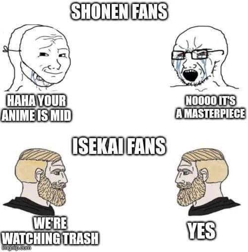

Score: 4/5
This anime is underrated, it scored 6.4/10 amongst 50k users on MAL. Only 3 anime on my list of 300 rank lower than that, and yet it was thoroughly enjoyable. And not just in the manner of guilty pleasure, or unashamed indulgence in cheap paint by numbers Isekai. No doubt there are a lot of elements that feel cheap with it, the rambunctious pacing, the constant introduction and discarding of new characters and settings. The plot devices appear to be improvised and just when all these elements somehow come together in harmony the climax is brought down by the use of the MC's overpowered ability. It really does give the impression that the author was making up the story as they went, and yet, there is a perceptible genius in juggling a huge cast and world filled with every superpower a nation of 8th graders could conjure up.
Isekai is the ultimate premise for wish fulfillment and escapism, as I can not imagine a further escape from reality than completely moving worlds, with the boon of an overpowered ability, and a harem that adores you. This makes it hard to write a story following the "heroic journey". Any conflict or adversity is insubstantial, and the viewers are complicit, they are here to bask in the wish fulfillment fantasy. To be facetious: Isekai is trash and we like it that way. Now, there are plenty of Isekai with artistic merit. These depend on the author's technical mastery over the premise and the genre's tropes to avoid the pit falls engendered by an overpowered protagonist. Re:Zero's focuses on mystery and the emotional tole of the OP ability. Konosuba is a parody that gives the protagonist a useless ability and companions for comedic effect. Tsukimichi and Slime lean on navigating politics. And before Isekai was coined as a sub genre, there was Now and Then, Here and There, a gut wrenching story of two kids abducted into a post apocalyptic world without the benefits of super powers. If it were aired today it would be considered a deconstruction and satire of the genre. The fact is, while an OP protagonist is not a prerequisite to Isekai, it is the quickest route to make a fun wish fulfillment fantasy.

InstaDeath (for short) is an isekai with every ingredient thrown in: magic, technology, secret esoteric societies, demon lords and heroes. There is no aesthetic standard, contemporary cities, medieval towers, super robots, mythical monsters everything goes. The pacing is chaotic, and the world has so many abilities and rules, leading to impossible scenarios if not for the protagonist's deus ex machina level power. These resolutions can get disappointing but at some point you stop being let down, it becomes a game of chicken with the author, will the MC meet his match this time? Which keeps the fun in it. The exploring of the psyche and morality as it would apply to a "godly" being also makes for an entertaining philosophical exercise, and keeps the protagonist from devolving into a self-insert for the viewer. In that regard the author didn't write a world where the protagonist can find love and be loved. It isn't somewhere where his self worth is finally recognized, a vector for the viewer to overcome their own insecurities. The protagonist has an OP ability but it isn't for the benefit of the audience, or even the greater good. As his teacher would say "it's impossible to apply ethics and morals to beings that surpass humans. Instead, they have to make their own rules for themselves". InstaDeath levies the power of fiction, it follows its own rules, it stands on its own character not the audience's wishes, and most importantly it's fun.